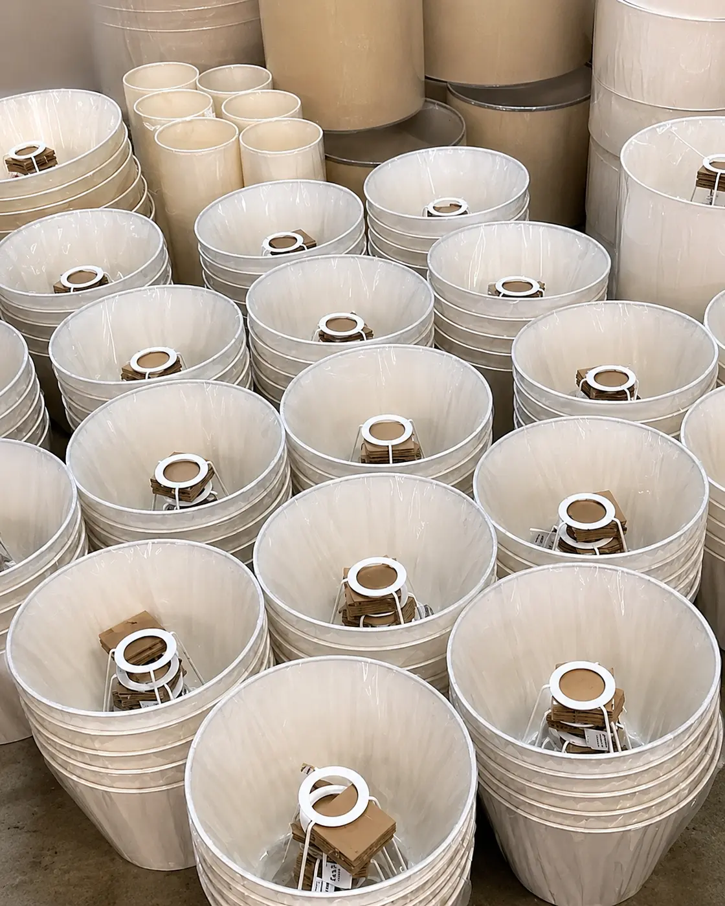
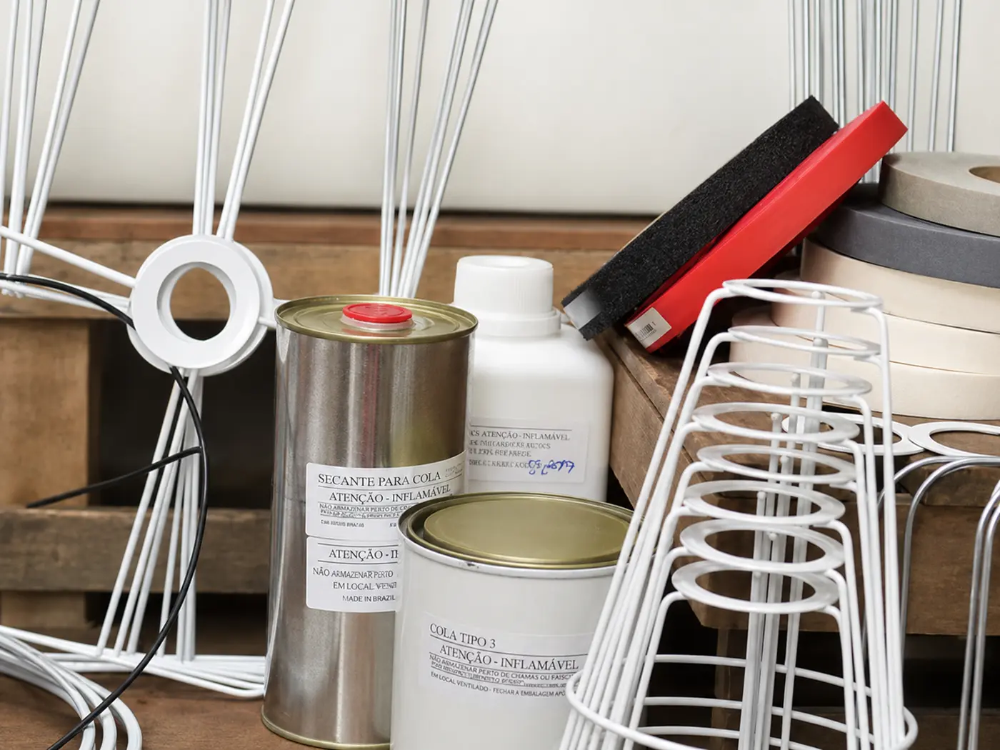

Fábrica em Itaquera · São Paulo
Cúpulas para abajur feitas sob encomenda
Produção própria para lojistas, marcas de iluminação, montadoras e revendedores. Escolha um modelo ou envie as medidas do seu projeto para avaliação da fábrica.
- Produção própria
- Atendimento ao atacado
- 40 referências
Modelos e medidas
Escolha uma referência. A fábrica cuida do restante.
 Bege
Bege
Cônica / Empire · Ref. 0111 × 27 × 18Configurar modelo
 Juta natural
Juta natural
Piramidal quadrada · Ref. 0825 × 60 × 35Configurar modelo
 Off White
Off White
Drum / Cilíndrica · Ref. 0543 × 43 × 27Configurar modelo
 Branco
Branco
Piramidal retangular · Ref. 2222 × 55 × 36Configurar modelo
 Gelo
Gelo
Bell / Sino · Ref. 0618 × 45 × 31Configurar modelo
 Preto
Preto
Box reto / Quadrada · Ref. 0926 × 26 × 17Configurar modelo
Por dentro da produção
Seu pedido é avaliado e produzido diretamente pela fábrica
Você parte de uma referência ou envia as próprias medidas. A Center conversa com você, avalia a viabilidade e prepara o orçamento.
- 01Comece por uma referência
Use um dos 40 modelos do catálogo ou apresente uma geometria diferente.
- 02Defina o acabamento
Informe medidas, material e cor desejados para organizar o pedido.
- 03Converse com quem produz
A própria fábrica analisa a configuração antes de confirmar o orçamento.

Como pedir
Do modelo ao orçamento em três passos
- 01
Escolha um ponto de partida
Use uma referência do catálogo ou informe as dimensões do seu projeto.
- 02
Conte o que você precisa
Defina formato, material, cor, quantidade e inclua as observações importantes.
- 03
Receba a avaliação da fábrica
Envie tudo pelo WhatsApp para análise de viabilidade e preparação do orçamento.

Da indicação para a internet
A mesma fábrica de sempre, agora mais fácil de encontrar
A Center Cúpulas cresceu atendendo clientes principalmente por indicação. O site reúne modelos e medidas para facilitar o primeiro contato; a análise do pedido e a produção continuam sendo feitas diretamente pela fábrica.
Produção própriaContato diretoSob encomenda
Fale direto com a fábrica
Envie seu modelo e as medidas pelo WhatsApp
Center Cúpulas · ItaqueraR. Cachoeira Buriti, 44 · São Paulo – SP · 08265-220Ver no Google Maps